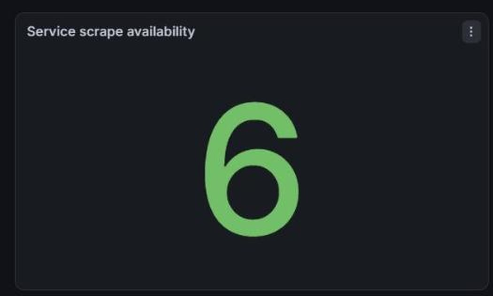
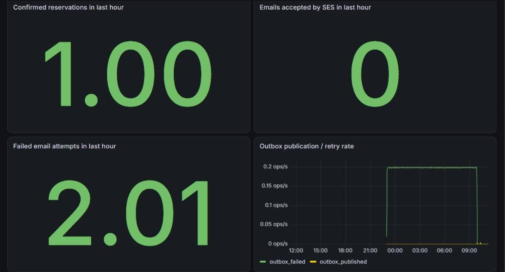

Make the demo memorable.
Explore destination concepts, compare expeditions, and build a cart. An AI concierge adds itinerary and packing ideas grounded in the catalog.
A fictional space travel storefront. A real exercise in microservices, container delivery, and keeping business rules in the right place.

The deployed planner returned a Mars Odyssey concept: a 21-day journey, an itinerary, packing inspiration, and an action to add Red Planet Passage. Open the capture to inspect the complete storefront.
Captured from the AWS development site before the demo infrastructure was torn down to control cost. Concept travel only.
Explore destination concepts, compare expeditions, and build a cart. An AI concierge adds itinerary and packing ideas grounded in the catalog.
Product owns prices. Inventory owns reservations. Order validates checkout. Separate build contexts keep each service independently deliverable.
Terraform defines the AWS platform. GitHub Actions builds images and deploys the dev environment with Helm, using OIDC for AWS authentication.
Each layer solves a specific problem, from consistent reservations to resilient event delivery.
DynamoDB supports atomic seat reservations. MySQL stores confirmed orders and an outbox. Valkey caches catalog reads without replacing Product as the price authority.
Order events move from the outbox through EventBridge to SQS. Notification processing uses at-least-once delivery, retries, and a dead-letter queue for failed messages.
Provider credentials stay in the Trip Planner service. Helm injects Kubernetes Secrets, workload roles limit AWS permissions, and AI recommendations reference catalog items rather than inventing checkout prices.
Application and infrastructure changes use separate protected branches. CI combines configuration validation, Compose smoke tests, and security checks. CD publishes commit-tagged images and verifies the dev deployment.
Prometheus scraped all six services and Grafana presented an operations dashboard for request rate, latency, server errors, reservations, and the notification outbox. Captured from the running AWS deployment on 5 October 2026.

